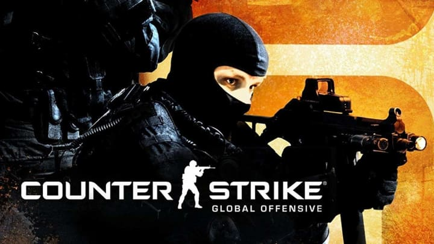
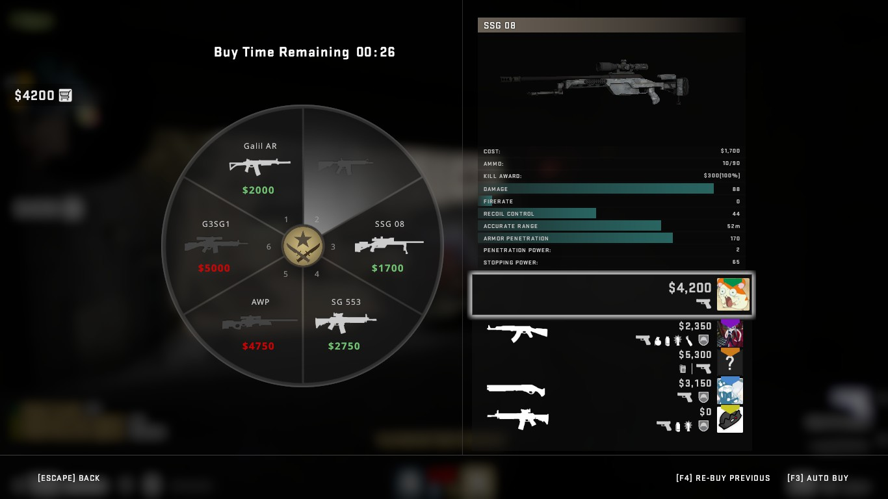
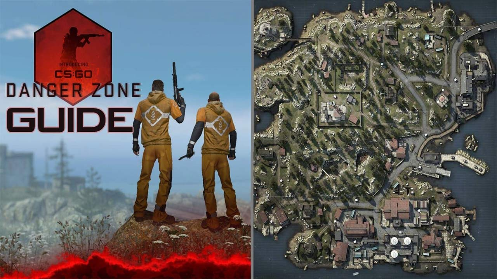

CS:GO
Counter-Strike: Global Offensive (CS:GO) is a multiplayer first-person shooter developed by Valve and Hidden Path Entertainment. It is the fourth game in the Counter-Strike series. Developed for over two years, Global Offensive was released for Windows, macOS, Xbox 360, and PlayStation 3 in August 2012, and for Linux in 2014. Valve still regularly updates the game, both with smaller balancing patches and larger content additions.
The game pits two teams, Terrorists and Counter-Terrorists, against each other in different objective-based game modes. The most common game modes involve the Terrorists planting a bomb while Counter-Terrorists attempt to stop them, or Counter-Terrorists attempting to rescue hostages that the Terrorists have captured. There are eight official game modes, all of which have distinct characteristics specific to that mode. The game also has matchmaking support that allows players to play on dedicated Valve servers, in addition to community-hosted servers with custom maps and game modes. A battle-royale game-mode, "Danger Zone", was introduced in December 2018.

Global Offensive received positive reviews from critics on release, who praised the game for its gameplay and faithfulness to the Counter-Strike series, though it was criticized for some early features and the differences between the console and PC versions. Since its release, it has drawn in an estimated 11 million players per month, and remains one of the most played games on Valve's Steam platform. In December 2018, Valve transitioned the game to a free-to-play model, focusing on revenue from cosmetic items.
The game has an active esports scene, continuing the history of international competitive play from previous games in the series. Teams compete in professional leagues and tournaments, and Global Offensive is now one of the largest global esports.
Gameplay
Global Offensive, like prior games in the Counter-Strike series, is an objective-based, multiplayer first-person shooter. Two opposing teams, the Terrorists and the Counter-Terrorists, compete in game modes to repeatedly complete objectives, such as securing a location to plant or defuse a bomb and rescuing or capturing hostages. At the end of each short round, players are rewarded based on individual and team performance with in-game currency to spend on other weapons or utility in subsequent rounds. Winning rounds generally rewards more money than losing does, and completing map-based objectives, including killing enemies, gives additional cash bonuses.
Global Offensive has eight official game modes: Competitive, Casual, Deathmatch, Arms Race, Demolition, Wingman, Flying Scoutsman, and Danger Zone. Competitive mode, the primary gameplay experience, pits two teams of five players against each other in a best-of-30 match. When playing Competitive, players have a skill rank based on an Elo rating system and are paired with and against other players around the same ranking. The Casual and Deathmatch modes are less serious than Competitive mode and do not register friendly fire. Both are primarily used as a practice tool. Arms Race and Demolition, both based on mods for previous iterations in the series, were added alongside eight new maps for the modes. Arms Race is the Global Offensive variant of the "Gun Game" mode in other games in the series. Demolition is another bomb defusal game mode, with gun upgrades only given to players who killed an enemy in the previous round. Wingman is a two-on-two bomb defusal game mode taking place over sixteen rounds. Similar to Competitive, players are paired based on a dynamic skill ranking. The Flying Scoutsman mode equips players with only a SSG 08 (known in-game as the "Scout") and a knife in a low-gravity map. Danger Zone is a battle-royale mode in which up to 18 players search for weapons, equipment, and money in an effort to be the last person or team remaining. Valve also included an offline practice mode designed to help new players learn how to use guns and grenades, called the Weapons Course. Apart from the Weapons Course, all other game modes can be played online or offline with bots.

There are five categories of purchasable weaponry: rifles, submachine guns, "heavy" weaponry (light machine guns and shotguns), pistols, and grenades. Each gun in Global Offensive has a unique recoil pattern that can be controlled, a gameplay feature the series has long been associated with. Global Offensive also introduced weapons and equipment not seen in previous installments, including tasers and an incendiary grenade.

In-game matchmaking is supported for all online game modes and is managed through the Steam platform. The game servers run Valve Anti-Cheat to prevent cheating. One form of matchmaking in Global Offensive to prevent cheating, Prime Matchmaking, hosts matches that can only be played with other users with the "Prime" status. This feature also results in more equal matches as there are fewer "smurfs" in these matches. The PC version of Global Offensive also supports private dedicated servers that players may connect to through the community server menu in-game. These servers may be heavily modified and can drastically differ from the base game modes. There have been many community made mods for the game, one of the popular ones being "kz", a mod that makes players complete obstacle courses requiring advanced strafing and jumping techniques.